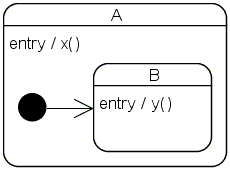
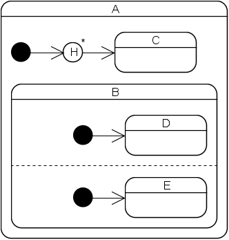
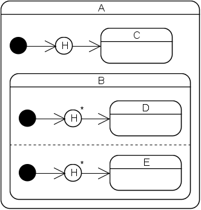
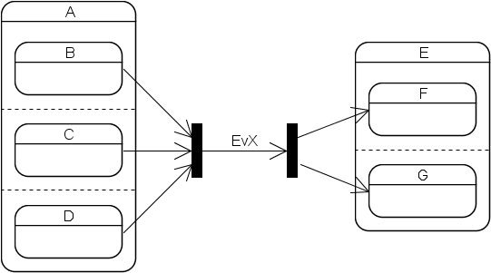
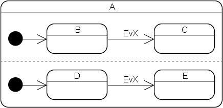
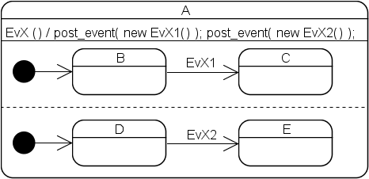
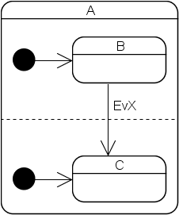

|
|
Boost Statechart 库设计理由 |
本库开发过程中做出的大多数设计决策, 都源自以下要求.
Boost.Statechart 应当...
在开始开发本库之前, 我考察了以下框架:
我相信 Boost.Statechart 满足所有要求.
这一尚不广为人知的状态机特性之所以可行, 是因为每个状态都由一个类表示. 进入状态时会构造该类的一个对象, 状态机退出该状态时再析构该对象. 因此, 任何只在机器处于该状态期间才有用的数据都可以 (而且应该) 作为该状态的成员. 这一特性与把状态机分散到多个翻译单元的能力相结合, 使近乎无限的可扩展性成为可能.
在大多数现有 FSM 框架中, 整个状态机运行在一个环境 (上下文) 中. 也就是说, 状态机局部的所有资源句柄和变量都存储在一处 (通常是某个派生自状态机基类的类的成员). 对大型状态机而言, 这常常导致该类拥有大量数据成员, 而其中大多数只在机器的一小部分中短暂使用. 于是状态机类往往成为改动热点, 导致整个状态机频繁重新编译.
常见问题条目 状态局部存储 (state-local storage) 到底好在哪里? 通过比较教程中的 StopWatch 与一个行为等价但不使用状态局部存储的版本, 进一步说明了这一点.
在运行期构建的状态机几乎总能用简单的状态模型应付 (没有层次状态、没有正交状态、没有进入与退出动作、没有历史), 因为布局常常 由算法计算得出. 另一方面, 在编译期固定的机器布局几乎总是由人设计, 人为了把复杂度保持在可接受的水平, 常常需要/想要一个精细的状态模型. 因此, 动态可配置的 FSM 框架常常为简单的扁平机器而优化, 而静态变体的实现则往往提供更多用于抽象的特性.
然而, 功能完备的动态 FSM 库确实存在. 那么, 问题就来了:
有人可能会说, 动态可配置的 FSM 框架就足够了, 因为 任何状态机都可以用它实现. 然而, 这类框架由于自身性质, 在用于实现静态机器时有诸多缺点:
正是出于这些原因, Boost.Statechart 从一开始就被构建为 不支持动态可配置性. 但这并不意味着用本库实现的机器无法动态塑形. 例如, 可以使用守卫 (guard), 依据仅在运行期可用的输入执行不同转换. 不过, 此类布局变更永远只能限于编译前可预见的范围. 一个多少相关的库, boost::spirit 解析器框架, 允许大致相同的运行期可配置性.
UML 状态机语义规范对错误处理只字未提. 此外, 大多数现有 FSM 方案似乎也忽略了这个问题.
请看以下状态配置:

两个状态都定义了进入动作 (x() 和 y()). 每当状态 A 变为活动状态时, 对 x() 的调用会立即跟一次对 y() 的调用. y() 可能依赖 x() 的副作用. 因此, 如果 x() 失败, 再执行 y() 就没有意义. 这并非什么冷僻的边角案例, 而是在日常状态机中随时发生的事情. 例如, x() 可能分配内存, 其内容随后由 y() 修改. 教程 Getting state information out of the machine 一节中有一个不同但在错误处理方面同样关键的情形: Running::~Running() 访问其外层状态 Active. 如果 Active 的进入动作失败而 Running 仍然被进入, 那么 Running 的退出动作就会引发未定义行为. 外层状态与内层状态之间的错误处理情形类似于基类与派生类: 如果基类构造函数失败 (通过抛出异常), 构造中止, 派生类构造函数不会被调用, 对象也就永远不会诞生.
在大多数传统 FSM 框架中, 只要错误能传播给状态机客户端, 这类错误情形相对容易处理. 此时, 失败的动作只需把 C++ 异常传播进框架, 框架通常不捕获该异常, 从而让状态机客户端得以处理. 注意, 这样处理之后, 客户端就不能再使用状态机对象了, 因为它要么处于未知状态, 要么框架已因异常而将其重置 (例如通过 scope guard). 也就是说, 状态机通常只能提供基本异常安全, 这是其本性使然.
然而, 一旦许多动作可能失败、且状态机 自身需要妥善处理这些错误, 传统 FSM 框架的错误处理就会变得异常繁琐. 通常, 失败的动作 (例如 x()) 随后投递一个恰当的错误事件, 并把全局错误变量置为 true. 之后的每个动作 (例如 y()) 在做任何事之前都得先检查错误变量. 所有动作完成后 (它们什么都没做!), 还得处理先前投递的错误事件, 进而执行补救动作. 请注意, 仅仅把错误事件排入队列是不够的, 因为可能还有其他事件在等待. 相反, 错误事件必须拥有绝对优先级并立即处理. 有一些稍微不那么繁琐的 FSM 错误处理方法, 但它们通常需要改变状态图布局, 从而掩盖正常行为. 无论采用哪种方法, 程序员通常都被迫编写大量处理错误的代码, 而其中大部分 并非用于错误处理, 而是用于错误传播.
C++ 异常可以从任何动作传播出来以指示失败. 根据状态机的配置, 这类异常要么立即传播给状态机客户端, 要么被捕获并转换为立即分派的一个特殊事件. 更多信息见教程的 异常处理一章.
退出动作可以通过给状态添加析构函数来实现. 由于析构函数的性质, 这种做法有两个缺点:
state_machine<> 对象被析构时, 所有当前活动状态也不可避免地随之析构. 也就是说, 状态机终止与状态机对象的析构绑定在一起以我的经验, 上述两点在实践中通常都不成问题, 因为...
然而, 一些人提出的理论论证和真实场景表明, 退出动作到析构函数的映射 可能成为问题, 而变通方法又过于繁琐. 这就是现在支持 两阶段退出的原因.
对于异步状态机, 不同应用的需求差别很大:
默认情况下, asynchronous_state_machine<> 子类型对象由一个 fifo_scheduler<> 对象提供服务. fifo_scheduler<> 在单线程应用中不加锁也不等待, 在多线程程序中则使用 boost::thread 原语来加锁和等待. 此外, 一个 fifo_scheduler<> 对象可以为任意多个 asynchronous_state_machine<> 子类型对象提供服务. 在底层, fifo_scheduler<> 只是其 FifoWorker 模板参数对象 (负责管理队列并确保线程安全) 和一个 processor_container<> (负责管理状态机的生存期) 的薄封装.
UML 标准规定, 在状态机中未触发反应的事件应被静默丢弃. 由于 fifo_scheduler<> 对象本身也是一个状态机, 发往已不存在的 asynchronous_state_machine<> 子类型对象的事件也会被静默丢弃. 这之所以可行, 是因为 asynchronous_state_machine<> 子类型对象不能直接构造或析构, 而必须通过 fifo_scheduler<>::create_processor<>() 和 fifo_scheduler<>::destroy_processor() 来完成 (processor 这个名字表明 fifo_scheduler<> 只能容纳 event_processor<> 子类型对象; asynchronous_state_machine<> 只是实现这类处理器的一种方式). 此外, create_processor<>() 只返回一个 processor_handle 对象. 此后必须通过该对象, 经由调度器来启动状态机、为其排队事件、终止并销毁状态机.
如果用户需要定制调度器行为, 可以在实例化 fifo_scheduler<> 时使用自己建模 FifoWorker 概念的类. 我考虑过一个泛化得多的设计, 把加锁与等待实现在策略中, 但至今没能为它设计出干净简洁的接口. 尤其是等待, 有点难以建模, 因为有些平台有条件变量, 有些有事件, 还有些根本没有等待的概念 (它们改为循环, 直到新事件到达, 推测是经由 ISR). 鉴于实现自定义 FifoWorker 类型只需相对很少的代码, 且几乎所有应用最多只会实现一个这样的类, 这么做本来就不太值得. 需要更简或更复杂的事件处理器生存期管理的应用, 可以在更粗的层面上定制行为, 即使用自定义的 Scheduler 类型. 对需要非 FIFO 排队方案的应用, 目前也是如此. 不过, Boost.Statechart 将来可能会提供 priority_scheduler, 这样只有在极少数情况下才需要实现自定义调度器.
所有用户提供的函数 (react 成员函数、进入、退出与转换动作) 都必须是类成员. 原因如下:
react 成员函数与转换动作常常访问状态局部数据. 因此, 把这些函数实现为其所操作数据所在类的成员, 是最自然的做法不支持 UML 联结点, 因为任意复杂的守卫表达式都能用 custom_reaction<> 轻松实现.
目前对这个 UML 元素没有直接支持, 因为其行为通常可以用 custom_reaction<> 实现. 少数情况下不可行, 即选择点恰好是初始状态时. 这时, 该行为可以按如下方式轻松实现:
struct make_choice : sc::event< make_choice > {};
// universal choice point base class template
template< class MostDerived, class Context >
struct choice_point : sc::state< MostDerived, Context >
{
typedef sc::state< MostDerived, Context > base_type;
typedef typename base_type::my_context my_context;
typedef choice_point my_base;
choice_point( my_context ctx ) : base_type( ctx )
{
this->post_event( boost::intrusive_ptr< make_choice >(
new make_choice() ) );
}
};
// ...
struct MyChoicePoint;
struct Machine : sc::state_machine< Machine, MyChoicePoint > {};
struct Dest1 : sc::simple_state< Dest1, Machine > {};
struct Dest2 : sc::simple_state< Dest2, Machine > {};
struct Dest3 : sc::simple_state< Dest3, Machine > {};
struct MyChoicePoint : choice_point< MyChoicePoint, Machine >
{
MyChoicePoint( my_context ctx ) : my_base( ctx ) {}
sc::result react( const make_choice & )
{
if ( /* ... */ )
{
return transit< Dest1 >();
}
else if ( /* ... */ )
{
return transit< Dest2 >();
}
else
{
return transit< Dest3 >();
}
}
};
choice_point<> 目前还不是 Boost.Statechart 的一部分, 主要是因为我担心初学者会在本应使用 custom_reaction<> 的地方误用它. 如果需求足够高, 我会把它加入库中.
目前不支持带正交区域状态的深历史:

尝试实现这一状态图会导致编译期错误, 因为 B 有正交区域, 而其直接或间接外层状态包含深历史伪状态. 换言之, 包含深历史伪状态的状态不得有任何自身带正交区域的直接或间接内层状态. 这一限制源于: 完整的深历史支持实现起来更复杂, 且比目前实现的受限深历史支持消耗更多资源. 此外, 完整的深历史行为可以用浅历史轻松实现:

当然, 这只有在 C、D、E 及其任何直接或间接内层状态都没有正交区域时才行得通. 否则, 就得递归地应用这一模式.

不支持同步条, 也就是说, 一个转换总是恰好从一个状态出发, 并恰好终止于一个状态. 汇合条有时有用, 但其行为可以用守卫轻松模拟. 支持分叉条会使实现 复杂得多, 而且很少需要.
Boost.Statechart 的事件分派算法不同于 David Harel 的原始论文和 UML 标准所规定的算法. 两者都要求每个事件分派给状态机的所有正交区域. 示例:

这里, Harel/UML 分派算法规定, 当处理 EvX 事件时, 机器必须从 (B,D) 转换到 (C,E). 由于 Harel 在 其论文第 7 章中描述的种种微妙之处, 该算法的实现不仅相当复杂, 而且远慢于 Boost.Statechart 采用的简化版本, 后者一旦找到适合当前事件的 反应就停止搜索. 也就是说, 如果这个例子用本库实现, 机器将不确定地从 (B,D) 转换到 (C,D) 或 (B,E). 之所以选择这个版本, 是因为以我的经验, 真实机器中不同的正交区域往往不会为相同的事件指定转换. 对于少数会这样做的情形, UML 行为可以按如下方式轻松模拟:


跨越正交区域的转换目前在编译期报错 (UML 规范明确允许这种转换, 而 Harel 则完全没有提及). 我决定不支持它们, 因为我曾误图实现这种转换多次, 但从未遇到过任何有意义的场景. 如果您需要做这种转换, 请务必告诉我!

修订于 03 December, 2006
版权所有 © 2003-2006 Andreas Huber Dönni
按 Boost 软件许可 1.0 版 (Boost Software License, Version 1.0) 分发. (随附文件 LICENSE_1_0.txt 或复制于 http://www.boost.org/LICENSE_1_0.txt)